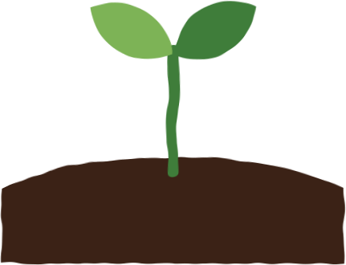
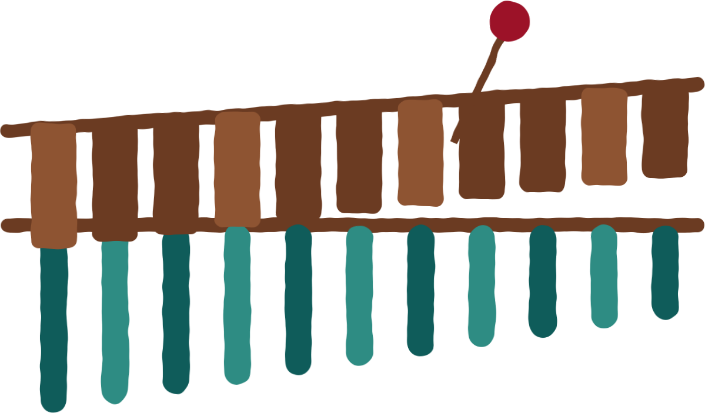
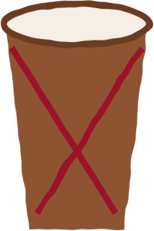

tramo 1 · 8 a 13 años
Semilleros
Permanencia escolar. La marimba enseña matemáticas y la tradición oral enseña a leer.
Yuliana, 12: descubre que los ritmos de la marimba son fracciones. Por primera vez, las matemáticas le suenan.
Juntos por Colombia · Litoral Pacífico · 2027–2030
Azotea es una red de lugares fijos, abiertos todo el año, donde niñas, niños y jóvenes del litoral aprenden de sus mayores y convierten sus saberes en futuro.
baja con la marea ↓
00 / azotea en 90 segundos

Una historia para recorrer la página
Tiene 12 años y vive en Buenaventura. Su abuela canta alabaos y cocina como nadie en el barrio. Yuliana es buena con los números, aunque todavía no lo sabe. Vamos a acompañarla de los 12 a los 20 años.
Yuliana es un personaje ilustrativo. Su recorrido sigue el diseño del modelo Azotea; no es un testimonio real.
01 / el territorio
La marimba, la partería, los alabaos, el viche, la cocina de las matronas. El litoral está lleno de saberes que sostienen la vida. Lo que no se sostiene es la trayectoria de sus jóvenes en la escuela: la mayoría no llega a la educación media.
Cobertura neta en educación media, 2023
Entidades territoriales certificadas. Fuente: Universidad Icesi con datos del MEN.
En Colombia, la mitad de los jóvenes en edad de cursar la media está matriculada en ella.
En las secretarías de Cauca y Nariño, poco más de un tercio.
En Buenaventura, donde abre la primera Azotea, 33,7 %: 17 puntos por debajo del país.
En el Chocó, uno de cada cuatro.
Buenaventura, 2023 · sector oficial
Fuente: SINEB, Ministerio de Educación Nacional.
02 / la palabra que se repite
esporádico
Programas que llegan en lancha, dejan algo y se van. Cuatro diagnósticos territoriales, una misma palabra. Sin continuidad, muchos adolescentes se rezagan en el paso de noveno a décimo, y el saber de los mayores se queda sin aprendices.
Interactivo · un año en el litoral
3 de 12 meses con acompañamiento
Un taller en marzo, una brigada en julio, una jornada en noviembre. Entre una lancha y la siguiente, el proceso se enfría.
Ilustración del patrón descrito en los cuatro diagnósticos territoriales; los meses son un ejemplo.

Yuliana · 14 años
Está en noveno. Justo el escalón donde muchos de sus compañeros se quedan. Lo que necesita no es otro taller que llegue y se vaya: es un lugar que esté ahí todo el año.
03 / azotea es lo contrario
Interactivo · sube la marea
Arrastra para subir la marea.
la metáfora
En el litoral, las familias levantan la azotea: una huerta sobre pilotes para que la marea no se lleve lo que más quieren cuidar.
la presencia
Azotea es un nodo fijo, abierto los 12 meses. No un taller que llega y se va: una sede donde la comunidad ya se encuentra, preferiblemente una institución educativa.
la entrada
Nada se abre sin la comunidad. Cada nodo pasa por un Protocolo de Activación Territorial con un equipo propio y dos co-investigadores jóvenes del territorio.
la red
La primera Azotea abre en Buenaventura. Para 2030, seis en el litoral, elegidas con un prediagnóstico de 8 a 10 candidatas.
04 / la siembra tiene tres tramos
tramo 1 · 8 a 13 años
Permanencia escolar. La marimba enseña matemáticas y la tradición oral enseña a leer.
Yuliana, 12: descubre que los ritmos de la marimba son fracciones. Por primera vez, las matemáticas le suenan.
tramo 2 · 14 a 17 años
Orientación vocacional y media técnica. Aprenden de parteras, cantaoras y cocineras, conocen los oficios de su tierra y escriben su propia ruta.
Yuliana, 15: pasa a décimo. Aprende cocina tradicional con una matrona y escribe en su ruta: «quiero un negocio propio».
tramo 3 · 18 a 28 años
Ruta productiva: lo aprendido se vuelve oficio, empleo con aliados o negocio propio.
Yuliana, 19: se certifica y abre un puesto de comida del Pacífico con las recetas de su abuela.
Núcleo: Educación y Cultura. Se activan según lo que encuentre cada territorio:
Agentes de derechos, salud mental y salud sexual y reproductiva, y saberes ancestrales de cuidado.
Fortalecimiento de iniciativas territoriales y empleo con aliados.
Interactivo · ¿dónde entra cada quien?
Semilleros
05 / sembradores de saber
0
portadoras y portadores de saber remunerados al cierre de 2030

 La partería y los saberes de cuidado002
La partería y los saberes de cuidado002 Los alabaos y la tradición oral003
Los alabaos y la tradición oral003
El viche y sus oficios004La abuela de Yuliana canta alabaos desde los 15 años. Ahora lo enseña en la Azotea a un grupo de aprendices, con pago, como cualquier oficio.
Una meta poco común en un proyecto educativo, y la que más nos importa: que ningún saber acompañado por Azotea pierda vitalidad.
06 / metas 2030
07 / cómo lo medimos
Diferencias en diferencias con emparejamiento entre participantes y no participantes. Donde haya más demanda que cupos, la asignación se hace por sorteo, el estándar más exigente.
Aprobación y paso de 9.° a 10.° con datos oficiales del SIMAT. El diseño detecta un efecto de 5,6 puntos porcentuales: de 85,6 % a 92 %. Descartamos la deserción anual como indicador principal porque su efecto esperado exigiría unos 10.700 jóvenes por grupo.
Porcentaje de egresados certificados con empleo o unidad de negocio activa a seis meses, e ingreso mensual frente a la línea base. Registro del nodo y reporte de aliados.
Un sistema propio de medición cultural sigue cada saber acompañado: portadores activos, aprendices y transmisión entre generaciones.
Teoría de cambio explícita y evaluación con los criterios OCDE-CAD: pertinencia, coherencia, eficacia, eficiencia, impacto y sostenibilidad.
Aporta a los ODS
3 · Salud y bienestar 4 · Educación de calidad 5 · Igualdad de género 8 · Trabajo decente 10 · Reducción de desigualdades08 / la inversión
Costeo con Protocolo de Activación Territorial incluido. El costo por persona divide el total entre 2.800 participantes y es un techo, no el costo marginal de sumar a una persona más.
Interactivo · calculadora de aliado
Estimación lineal con el escenario seleccionado arriba. Sirve para dimensionar, no es una cotización.
Yuliana · 20 años
Su puesto ya tiene clientela fija. Los sábados vuelve a la Azotea: ahora ella enseña a los Semilleros.
Buscamos aliados de cooperación para abrir la primera Azotea en Buenaventura en 2027 y crecer hasta seis en el litoral.